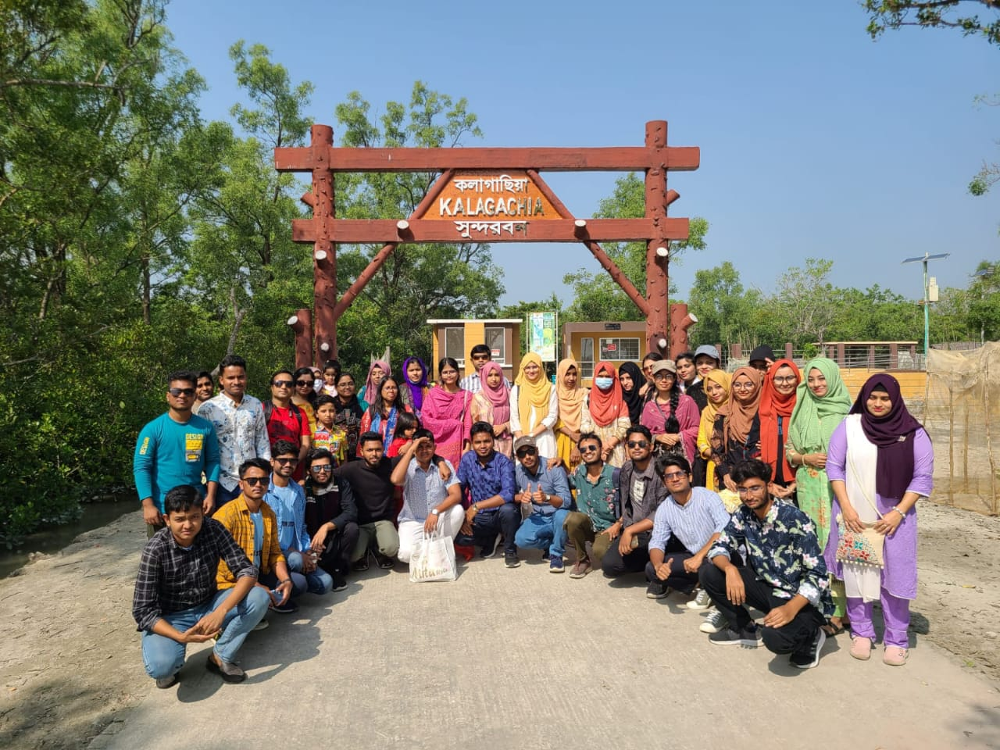
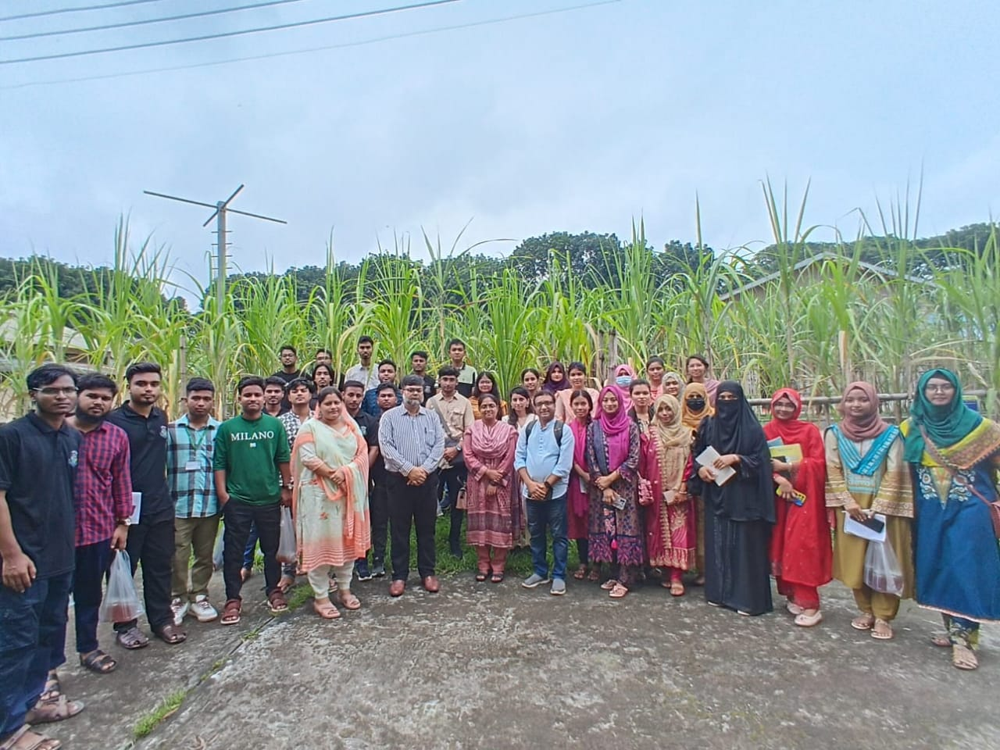
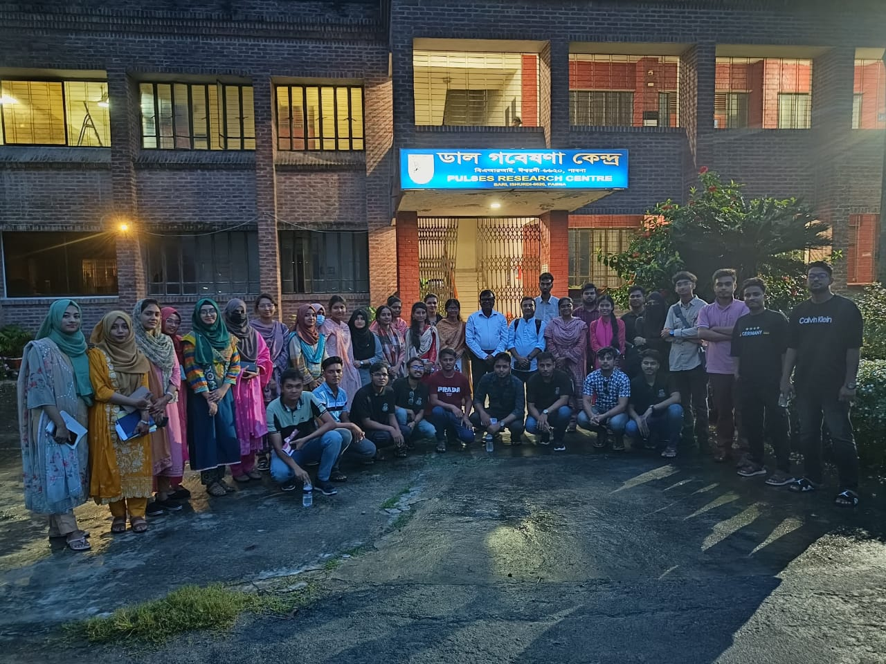

Agronomy
Study of crop production, soil management, and sustainable agricultural practices.
I am a Botany student with a deep appreciation for nature and a curiosity to understand the world around me. I enjoy exploring new ideas, learning independently, and developing my knowledge step by step. I believe in growing through continuous learning and new experiences.
I am Jannatun Nayem Jui, a final-year Botany student at the University of Barishal.
I enjoy exploring nature, learning about plant life, and discovering new ideas. I consider myself a self-learner who believes in continuous learning, personal growth, and developing knowledge step by step.
I aspire to grow through academic learning, research, and new experiences.
I am interested in exploring different areas of my academic coursework in Botany and have a growing interest in research and understanding the research process.
Study of crop production, soil management, and sustainable agricultural practices.
Exploring freshwater ecosystems, aquatic organisms, and their ecological interactions.
Understanding plant growth, development, metabolism, and responses to environmental factors.
Understanding essential nutrients, mineral uptake, and their roles in plant growth and development.
Learning about crop management, cultivation practices, and techniques for improving crop productivity.
Exploring the cultivation and management of fruits, vegetables, ornamental, and other horticultural plants.
Observing plant materials and structures through microscope work in academic learning.
Preparing and preserving plant specimens as part of botanical coursework.
Learning to recognize and identify plants through observation and study.
Developing familiarity with microscopic techniques through practical academic exposure.
Exploring botanical diversity and gaining practical insights through academic field visits and institutional exposure.

01Second Year Sundarbans
A university field tour to the Sundarbans, where I explored its diverse vegetation, mangrove ecosystems, and unique plant diversity. The experience offered an opportunity to observe nature beyond the classroom.

02Third Year BSRI
An educational visit to the Bangladesh Sugarcrop Research Institute, where I learned about different sugarcane varieties, cultivation practices, seed materials, and weed management techniques.

03Third Year Pulses Research Centre
Explored different pulse varieties and observed agricultural practices, from field-level cultivation to harvesting. This visit helped me gain practical insight into crop research and production.
Leadership and involvement across the Communication and IT departments at YSSE.
YSSE Current Position
IT Department
YSSE
Communication Department
YSSE
Communication Department
YSSE
Communication Department
Additional Programme
Completed
Certificates & learning
A collection of certifications, training programmes and learning experiences reflecting my commitment to continuous development and professional growth.
Gold Certificate
Youth School for Social Entrepreneurs (YSSE)
Program period: 20 Dec 2025 – 20 Jul 2026
View CertificateGold Certificate of Appreciation
Youth School for Social Entrepreneurs (YSSE)
Program period: 1 Aug 2025 – 20 Dec 2025
View Certificate“I believe meaningful growth begins with curiosity, consistency, and the willingness to learn from the basics. Every new experience is an opportunity to improve and discover something more.”
My goal is to continue developing myself through research, learning, and practical experiences. I aspire to build a meaningful career where I can combine scientific curiosity, professional skills, and leadership to make a positive contribution.
Open to meaningful connections, learning opportunities, and professional collaborations.